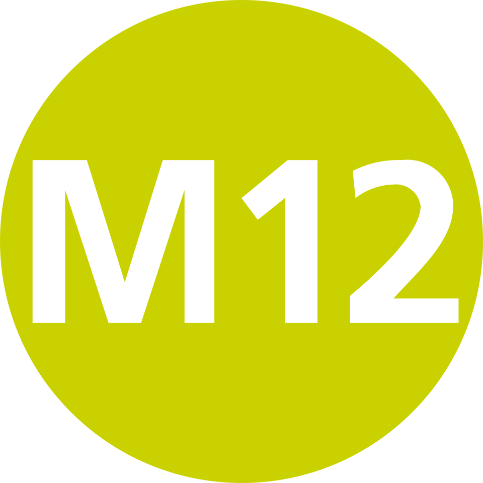
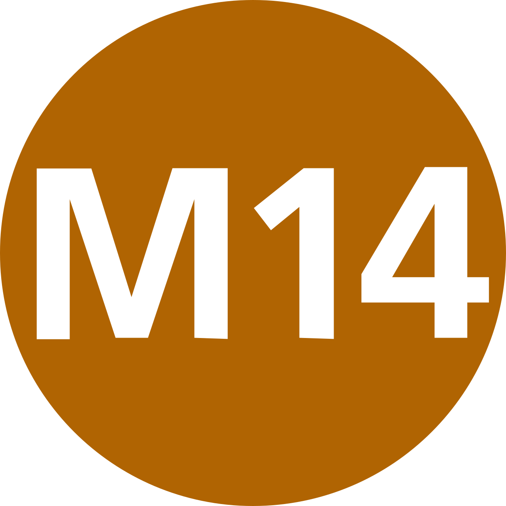
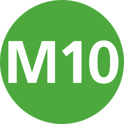

İnşa Halindeki Metro Hatları
İstanbul Anadolu Yakası'nda yapımı devam eden metro hatları.
 M4B Tavşantepe - Kaynarca Metro Hattı Uzatması
M4B Tavşantepe - Kaynarca Metro Hattı Uzatması
Fiziki İlerleme: %87,5
Yüklenici: Özgün İnş.
Açılış Hedefi:2027 İlk çeyrek
Kadıköy - Sabiha gökçen Havalimanı Metro Hattının uzatması olarak inşa Edilen Tavşantepe Kaynarca metro Hattı ile birlikte M4 hattı 2 ayrı kola ayrlması bir kolun sabiha gökçen üzerinden Kurtköy Kavşağına diğer kolun ile İçmeler/tuzla belediyesine uzatılması planlanmaktadır

M12 Ümraniye - Ataşehir - Göztepe Metro HattıHat Türü: Sürücüsüz Metro
İşletmeci: Metro İstanbul
Açılış: 2017
Uzunluk: 20 km+
Anadolu Yakası'nın ilk sürücüsüz metro hattıdır.

M14 Altunizade - Bosna Bulvarı Metro HattıFziki İlerleme: Metro
Yüklenici: Metro İstanbul
Açılış Hedefi: 2027 İlk Çeyrek
Uzunluk: 4 km
Bostancı bölgesini Dudullu üzerinden kuzey ilçelerine bağlayan metro hattıdır.

M10 Pendik Merkez - Sabiha Gökçen Hvl. Metro HattıFiziki İlerleme: %87,5
Yüklenici: Metro İstanbul
Açılış Hedefi 2027 ilk çeyrek: 2022
Pendik bölgesinden havalimanına ulaşım sağlayan metro bağlantısıdır.
Fiziki İlerleme: %8
Yüklenici: Doğuş İnş.
Açılış Hedef: 2029
10 Mart 2024 tarihinde ekrem imamoğlu trafından inşaat çalışmaları yeniden başlamıştır